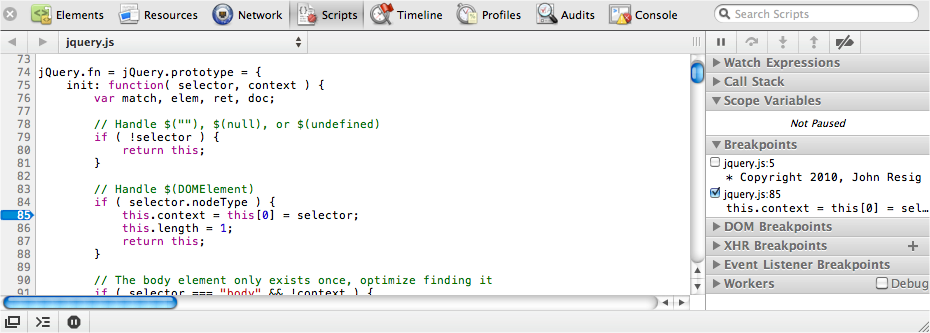
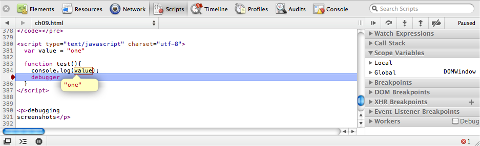

{% include JB/setup %}
{% raw %}
<div>
<div class="book" title="Using the Debugger"><div class="book"><div class="book"><div class="book"><h1 class="title1"><a id="I_sect19_d1e9351" class="calibre1"></a>Using the Debugger</h1></div></div></div><p class="calibre3"><a id="I_indexterm9_d1e9355" class="calibre1"></a>The JavaScript debugger is one of the best-kept secrets in
    JavaScript development. It’s a full-featured debugger that allows you to
    place breakpoints, watch expressions, examine variables, and work out
    exactly what’s going on.</p><p class="calibre3">Placing a breakpoint is easy—just add the <code class="literal">debugger</code> statement inside the script at the
    point you want the debugger to pause execution:</p><pre class="screen">var test = function(){
  // ...
  debugger
};</pre><p class="calibre3">Alternatively, you can go to the Scripts panel in the inspector,
    select the relevant script, and click on the line number where you want to
    place the breakpoint.<a id="I_indexterm9_d1e9370" class="calibre1"></a> <a class="ulink" href="ch09s08.html#fig_9_10" title="Figure 9-10. Setting a breakpoint with Safari's Web Inspector">Figure 9-10</a> shows an example.</p><div class="figure"><a id="fig_9_10" class="calibre1"></a><div class="book"><div class="book"><a id="I_mediaobject9_d1e9379" class="calibre1"></a></div></div><p class="title4">Figure 9-10. Setting a breakpoint with Safari's Web Inspector</p></div><p class="calibre3">The latter approach is probably preferable because you don’t want to
    risk getting any <code class="literal">debugger</code> statements in
    production code. When the JavaScript execution reaches the breakpoint,
    it’s paused, letting you examine the current scope, as shown in <a class="ulink" href="ch09s08.html#fig_9_11" title="Figure 9-11. Debugging a breakpoint with Safari's Web Inspector">Figure 9-11</a>.</p><div class="book"><div class="figure"><a id="fig_9_11" class="calibre1"></a><div class="book"><div class="book"><a id="I_mediaobject9_d1e9394" class="calibre1"></a></div></div><p class="title4">Figure 9-11. Debugging a breakpoint with Safari's Web Inspector</p></div></div><p class="calibre3">On the right of the inspector’s Scripts panel, you can see the full
    call stack, the local and global variables, and other relevant debugging
    information. You can hover the mouse over any variable to see its current
    value. The console is even scoped to the breakpoint, allowing you to
    manipulate variables and call other functions.</p><p class="calibre3">You can continue code execution, step into or over the next function
    call, and navigate up the current stack using the Debugger toolbar on the
    right. The Debugger toolbar icons are specific to the browser, but you can
    determine each button’s function by hovering the mouse over it, which
    displays a yellow information bubble.</p><p class="calibre3">It’s important to remember that breakpoints remain between page
    reloads. If you want to remove a breakpoint, simply toggle its line
    number, or uncheck it in the breakpoint list. The JavaScript debugger is a
    wonderful alternative to <code class="literal">console.log()</code>,
    as it helps you work out exactly what’s happening inside your
    application.</p></div></div>

{% endraw %}

